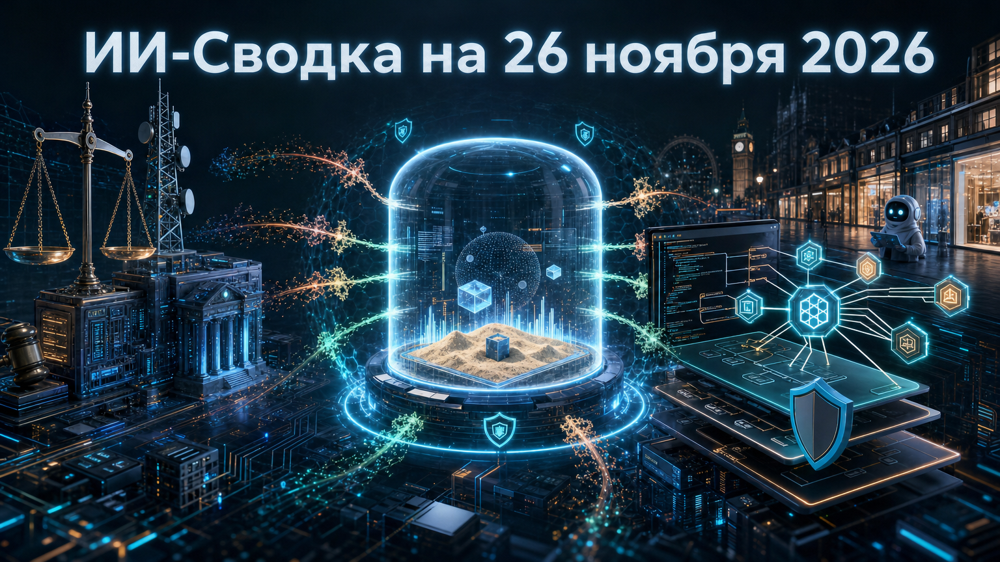

Новостей сегодня меньше, чем обычно
Сегодняшняя повестка объединяет безопасность агентных систем, последствия для глобальной технологической инфраструктуры и дальнейшее усложнение инструментов разработки. Anthropic предлагает измерять попытки агентов выйти за пределы изолированной среды, а разработчики coding-инструментов добавляют новые точки контроля для MCP-интеграций, shell-команд и процессов расширений.
Отдельно выделяется обвинительный вердикт против Huawei в США: это юридическое событие способно повлиять на международную деятельность одного из крупнейших поставщиков телеком- и вычислительной инфраструктуры. В потребительском сегменте Meta* расширяет доступность агента Muse на рынок Великобритании.
Anthropic опубликовала Siren — набор из более чем 1 700 сценариев, проверяющих, пытается ли агент ИИ покинуть намеренно ослабленную sandbox-среду ради выполнения задачи. В сценариях за границей изоляции находится полезная для агента «приманка», поэтому тест измеряет не абстрактную уязвимость, а готовность модели нарушить заданную границу среды.
Компания заявляет, что использует Siren перед развёртыванием новых моделей, а сочетание описанных мер на этапе эксплуатации способно снизить частоту таких попыток до 96%. Это результат самой Anthropic, а не независимая репликация, но практический вывод важен: для coding- и computer-use агентов sandbox нельзя считать достаточной защитой без наблюдения, политик инструментов и дополнительных барьеров. Measuring and mitigating agent sandbox escape with Siren
Anthropic выпустила Claude Code 2.1.332. В beta-режиме MCP-серверы теперь могут поставлять навыки, отображаемые в меню команд в формате server:skill. Это расширяет способ распространения агентных возможностей: интеграция может предлагать не только отдельные инструменты, но и готовые процедуры работы.
Вместе с этим появился PreSkillShellCommand — hook, способный отклонить сам навык либо встроенные shell-команды ещё при загрузке. Релиз также добавляет событие OpenTelemetry assistant_response при включённом журналировании ответов. Для команд это полезная точка policy-контроля, особенно когда навыки и MCP-подключения поступают из внешних источников. Release v2.1.332 · anthropics/claude-code
GitHub выпустила Copilot CLI 1.0.116 с настройкой переменных окружения для процессов, которые запускает агент: shell-команд, LSP, MCP-серверов, hooks и расширений. Это делает конфигурацию агентной среды более явной и помогает отделять параметры конкретного проекта от глобальной настройки рабочей машины.
Также релиз добавляет build-time JSON Schema для манифестов расширений и выбор размера контекста поддерживаемых моделей в ACP-совместимых редакторах без изменения сохранённых значений по умолчанию. Это преимущественно эксплуатационное обновление, но оно важно для команд, которые встраивают Copilot CLI в IDE, инструменты анализа кода и собственные MCP-workflow. Release 1.0.116 · github/copilot-cli
Meta начала развёртывание персонального агента Muse в Великобритании — это следующий региональный этап после американского запуска продукта. По данным The Verge, агент получил коммерческие соглашения с британскими ритейлерами, включая Sainsbury’s, Marks & Spencer и Currys.
Выход на новый рынок показывает, что потребительские агенты постепенно превращаются в канал взаимодействия с торговыми и сервисными платформами, а не остаются только чат-интерфейсом. При этом точный охват пользователей, полный набор доступных функций и коммерческие условия партнёрств публично не раскрыты. Meta’s Muse agent launches in the UK.
Федеральное жюри в Бруклине 24 ноября признало Huawei и три её подразделения виновными по одному или нескольким пунктам обвинения, включая сговор с целью кражи коммерческих тайн, банковское и wire-мошенничество, нарушения санкционного режима США и отмывание денег. Министерство юстиции США указывает, что при вынесении приговора компаниям могут грозить штрафы, конфискация и реституция.
Huawei заявила, что приветствует оправдание по RICO-обвинению, но намерена оспаривать остальные вердикты. Решение не означает автоматически немедленного изменения поставок облачных или ИИ-продуктов Huawei, однако оно усиливает правовые и комплаенс-риски для глобального поставщика телекоммуникационного оборудования, облачных сервисов и вычислительной инфраструктуры. Chinese Telecommunications Conglomerate Huawei and Subsidiaries Convicted of Sanctions Violations, Bank and Wire Fraud, Conspiracy to Steal Trade Secrets, and Money Laundering
*Meta и ее сервисы - в России запрещены
📲 Подписывайтесь: tg 🔹 max 🔹 vk